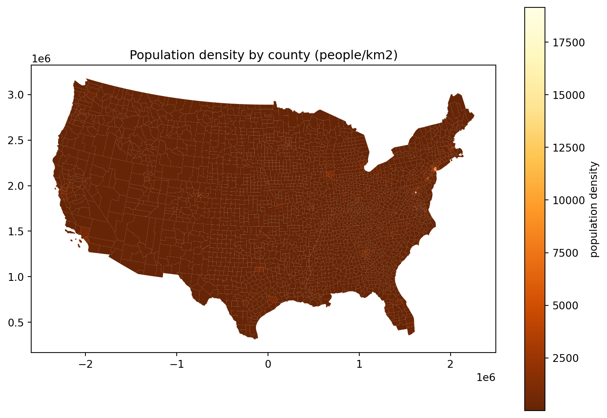
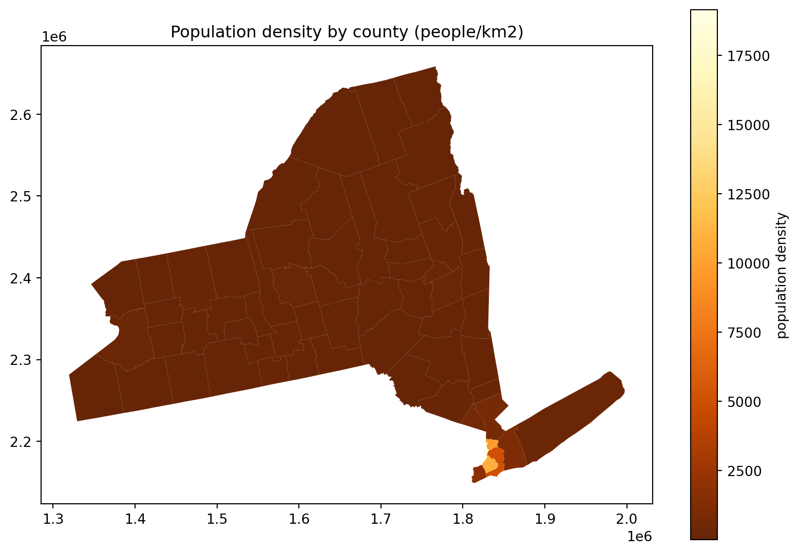
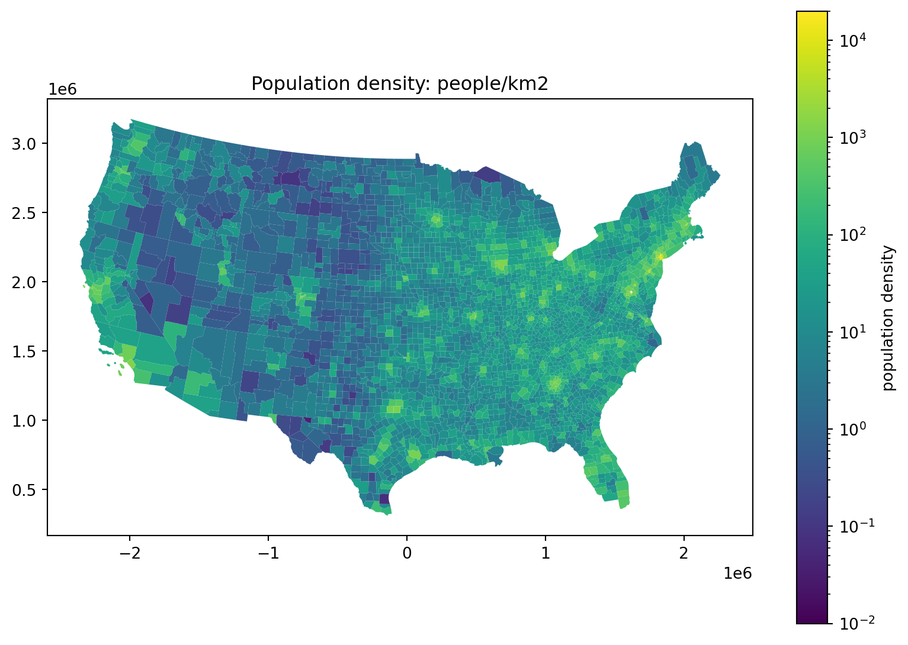
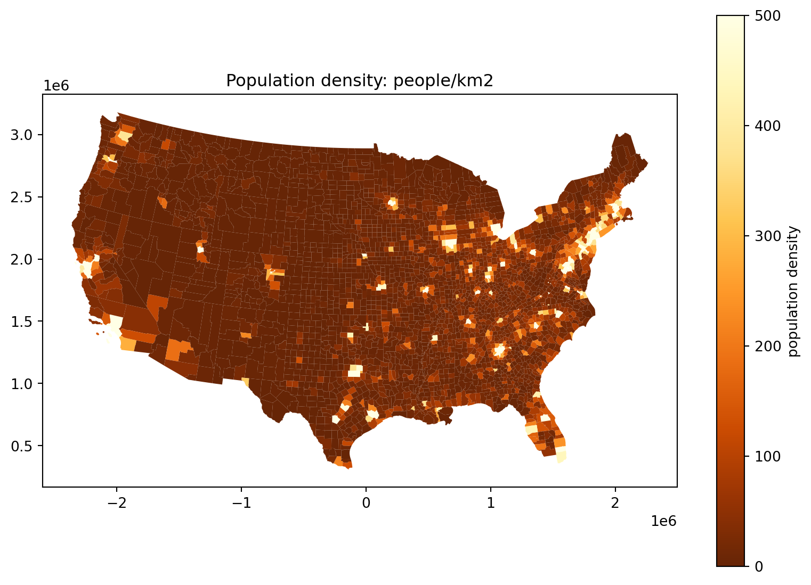
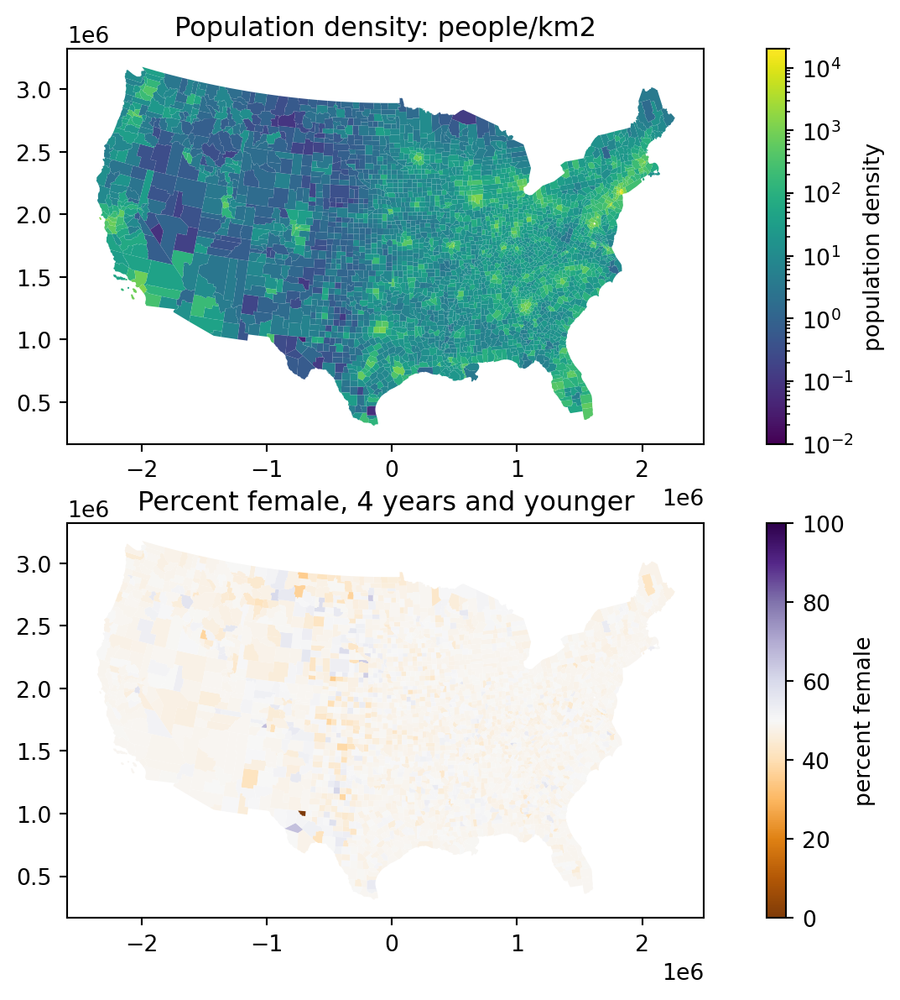
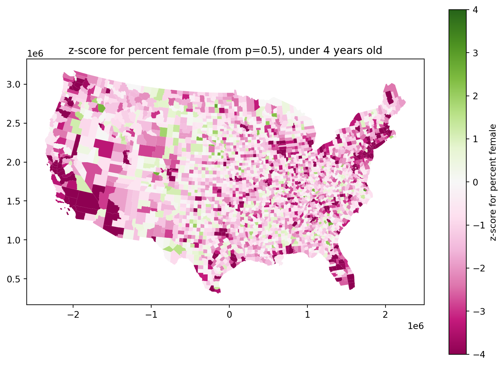
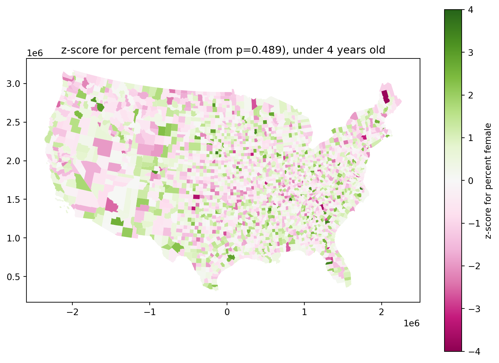
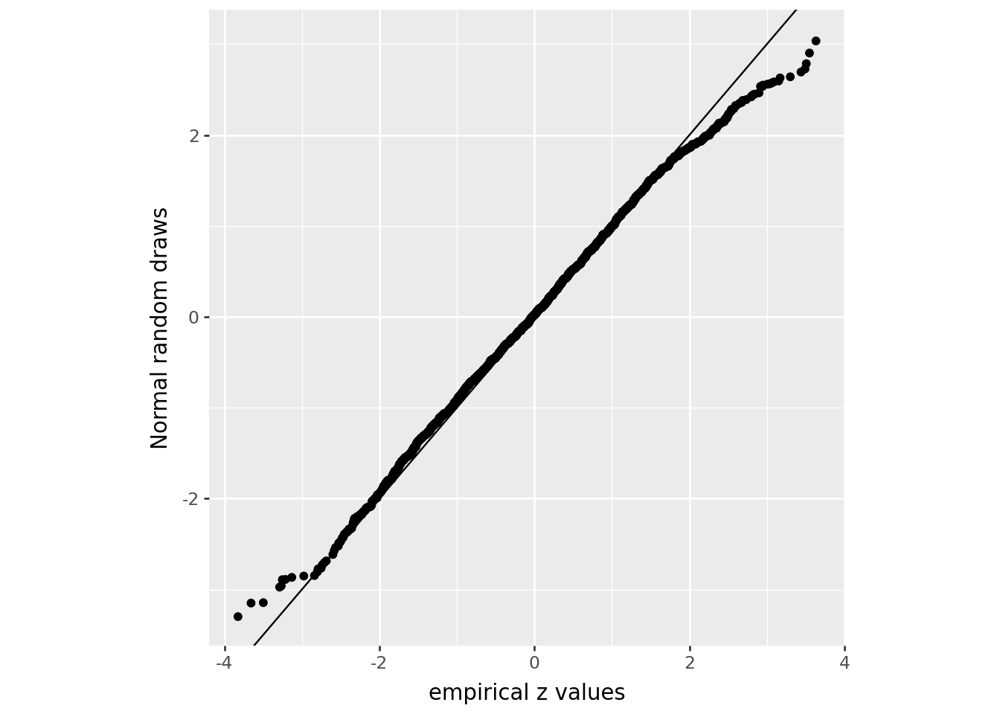

Mapping with the census
2026-02-23
Data: United States Census
County Population by Characteristics: 2020-2024
We’ll have a look at the Annual County and Puerto Rico Municipio Resident Population Estimates by Selected Age Groups and Sex: April 1, 2020 to July 1, 2024 (CC-EST2024-AGESEX)
Data downloaded from census.gov:
- cc-est2024-agesex-all.csv all the counts, by county
- CC-EST2024-AGESEX.pdf description of the variaables
Shape files:
For maps, we need county boundaries:
- TIGER2024: these are big; you’ll need to download these yourself
- Technical notes: at this link
What’s in that zip file? It’s a “shape file”, which is actually a bunch of related files. We don’t have to unzip it at all to use it.
$ unzip -l tl_2024_us_county.zip
Archive: tl_2024_us_county.zip
Length Date Time Name
--------- ---------- ----- ----
5 2024-09-16 10:58 tl_2024_us_county.cpg
993755 2024-09-16 10:58 tl_2024_us_county.dbf
165 2024-09-16 10:58 tl_2024_us_county.prj
132150152 2024-09-16 10:58 tl_2024_us_county.shp
42070 2025-06-02 09:04 tl_2024_us_county.shp.ea.iso.xml
50721 2025-06-02 09:04 tl_2024_us_county.shp.iso.xml
25980 2024-09-16 10:58 tl_2024_us_county.shx
--------- -------
133262848 7 files
Census data
Set-up:
What do we have?
From the documentation: CC-EST2024-AGESEX.pdf:
The key for YEAR is as follows:
- 1 = 4/1/2020 population estimates base
- 2 = 7/1/2020 population estimate
- 3 = 7/1/2021 population estimate
- 4 = 7/1/2022 population estimate
- 5 = 7/1/2023 population estimate
- 6 = 7/1/2024 population estimateand then
Data fields (in order of appearance):
VARIABLE DESCRIPTION
SUMLEV Geographic Summary Level
STATE State FIPS code
COUNTY County FIPS code
STNAME State name
CTYNAME County name
YEAR Year
POPESTIMATE Total population
POPEST_MALE Male population
POPEST_FEM Female population
UNDER5_TOT Total population under 5 years
UNDER5_MALE Male population under 5 years
UNDER5_FEM Female population under 5 years
AGE513_TOT Total population age 5 to 13
AGE513_MALE Male population age 5 to 13
AGE513_FEM Female population age 5 to 13
AGE1417_TOT Total population age 14 to 17
AGE1417_MALE Male population age 14 to 17
AGE1417_FEM Female population age 14 to 17
AGE1824_TOT Total population age 18 to 24
AGE1824_MALE Male population age 18 to 24
AGE1824_FEM Female population age 18 to 24
AGE16PLUS_TOT Total population age 16 years and over
AGE16PLUS_MALE Male population age 16 years and over
AGE16PLUS_FEM Female population age 16 years and over
AGE18PLUS_TOT Total population age 18 years and over
AGE18PLUS_MALE Male population age 18 years and over
AGE18PLUS_FEM Female population age 18 years and over
AGE1544_TOT Total population age 15 to 44
AGE1544_MALE Male population age 15 to 44
AGE1544_FEM Female population age 15 to 44
AGE2544_TOT Total population age 25 to 44
AGE2544_MALE Male population age 25 to 44
AGE2544_FEM Female population age 25 to 44
1AGE4564_TOT Total population age 45 to 64
AGE4564_MALE Male population age 45 to 64
AGE4564_FEM Female population age 45 to 64
AGE65PLUS_TOT Total population age 65 years and over
AGE65PLUS_MALE Male population age 65 years and over
AGE65PLUS_FEM Female population age 65 years and over
AGE04_TOT Total population age 0 to 4
AGE04_MALE Male population age 0 to 4
AGE04_FEM Female population age 0 to 4
AGE59_TOT Total population age 5 to 9
AGE59_MALE Male population age 5 to 9
AGE59_FEM Female population age 5 to 9
AGE1014_TOT Total population age 10 to 14
AGE1014_MALE Male population age 10 to 14
AGE1014_FEM Female population age 10 to 14
AGE1519_TOT Total population age 15 to 19
AGE1519_MALE Male population age 15 to 19
AGE1519_FEM Female population age 15 to 19
AGE2024_TOT Total population age 20 to 24
AGE2024_MALE Male population age 20 to 24
AGE2024_FEM Female population age 20 to 24
AGE2529_TOT Total population age 25 to 29
AGE2529_MALE Male population age 25 to 29
AGE2529_FEM Female population age 25 to 29
AGE3034_TOT Total population age 30 to 34
AGE3034_MALE Male population age 30 to 34
AGE3034_FEM Female population age 30 to 34
AGE3539_TOT Total population age 35 to 39
AGE3539_MALE Male population age 35 to 39
AGE3539_FEM Female population age 35 to 39
AGE4044_TOT Total population age 40 to 44
AGE4044_MALE Male population age 40 to 44
AGE4044_FEM Female population age 40 to 44
AGE4549_TOT Total population age 45 to 49
AGE4549_MALE Male population age 45 to 49
AGE4549_FEM Female population age 45 to 49
AGE5054_TOT Total population age 50 to 54
AGE5054_MALE Male population age 50 to 54
AGE5054_FEM Female population age 50 to 54
AGE5559_TOT Total population age 55 to 59
AGE5559_MALE Male population age 55 to 59
AGE5559_FEM Female population age 55 to 59
AGE6064_TOT Total population age 60 to 64
AGE6064_MALE Male population age 60 to 64
AGE6064_FEM Female population age 60 to 64
AGE6569_TOT Total population age 65 to 69
2AGE6569_MALE Male population age 65 to 69
AGE6569_FEM Female population age 65 to 69
AGE7074_TOT Total population age 70 to 74
AGE7074_MALE Male population age 70 to 74
AGE7074_FEM Female population age 70 to 74
AGE7579_TOT Total population age 75 to 79
AGE7579_MALE Male population age 75 to 79
AGE7579_FEM Female population age 75 to 79
AGE8084_TOT Total population age 80 to 84
AGE8084_MALE Male population age 80 to 84
AGE8084_FEM Female population age 80 to 84
AGE85PLUS_TOT Total population age 85 years and over
AGE85PLUS_MALE Male population age 85 years and over
AGE85PLUS_FEM Female population age 85 years and over
MEDIAN_AGE_TOT Median age for total population
MEDIAN_AGE_MALE Median age for male population
MEDIAN_AGE_FEM Median age for female populationFirst try:
Doing
cc = pd.read_csv("data/cc-est2024-agesex-all.csv")gets
---------------------------------------------------------------------------
UnicodeDecodeError Traceback (most recent call last)
Cell In[18], line 1
----> 1 cc = pd.read_csv("cc-est2024-agesex-all.csv")
...
UnicodeDecodeError: 'utf-8' codec can't decode byte 0xf1 in position 255962: invalid continuation byteSearching for byte 0xf1 python suggests trying encoding='latin-1'.
Second try:
Let’s just take the “July 2020” numbers (YEAR=2):
| SUMLEV | STATE | COUNTY | STNAME | CTYNAME | YEAR | POPESTIMATE | POPEST_MALE | POPEST_FEM | UNDER5_TOT | ... | AGE7579_FEM | AGE8084_TOT | AGE8084_MALE | AGE8084_FEM | AGE85PLUS_TOT | AGE85PLUS_MALE | AGE85PLUS_FEM | MEDIAN_AGE_TOT | MEDIAN_AGE_MALE | MEDIAN_AGE_FEM | |
|---|---|---|---|---|---|---|---|---|---|---|---|---|---|---|---|---|---|---|---|---|---|
| 1 | 50 | 1 | 1 | Alabama | Autauga County | 2 | 58909 | 28757 | 30152 | 3505 | ... | 1062 | 1147 | 494 | 653 | 897 | 338 | 559 | 39.1 | 37.9 | 40.2 |
| 7 | 50 | 1 | 3 | Alabama | Baldwin County | 2 | 233244 | 113925 | 119319 | 12241 | ... | 4879 | 5489 | 2509 | 2980 | 4353 | 1777 | 2576 | 43.6 | 42.5 | 44.8 |
| 13 | 50 | 1 | 5 | Alabama | Barbour County | 2 | 24975 | 13091 | 11884 | 1359 | ... | 529 | 562 | 238 | 324 | 472 | 156 | 316 | 40.8 | 39.1 | 43.5 |
| 19 | 50 | 1 | 7 | Alabama | Bibb County | 2 | 22176 | 11770 | 10406 | 1216 | ... | 402 | 469 | 194 | 275 | 400 | 123 | 277 | 40.5 | 38.8 | 42.9 |
| 25 | 50 | 1 | 9 | Alabama | Blount County | 2 | 59110 | 29376 | 29734 | 3450 | ... | 1165 | 1289 | 581 | 708 | 1049 | 382 | 667 | 41.1 | 40.3 | 42.0 |
| ... | ... | ... | ... | ... | ... | ... | ... | ... | ... | ... | ... | ... | ... | ... | ... | ... | ... | ... | ... | ... | ... |
| 18835 | 50 | 56 | 37 | Wyoming | Sweetwater County | 2 | 42196 | 21917 | 20279 | 2582 | ... | 461 | 540 | 256 | 284 | 451 | 150 | 301 | 36.7 | 36.8 | 36.7 |
| 18841 | 50 | 56 | 39 | Wyoming | Teton County | 2 | 23384 | 12202 | 11182 | 1096 | ... | 343 | 331 | 156 | 175 | 330 | 135 | 195 | 40.5 | 40.7 | 40.4 |
| 18847 | 50 | 56 | 41 | Wyoming | Uinta County | 2 | 20461 | 10390 | 10071 | 1294 | ... | 245 | 255 | 117 | 138 | 265 | 98 | 167 | 37.4 | 37.3 | 37.4 |
| 18853 | 50 | 56 | 43 | Wyoming | Washakie County | 2 | 7663 | 3941 | 3722 | 385 | ... | 159 | 225 | 106 | 119 | 210 | 78 | 132 | 44.0 | 43.0 | 45.1 |
| 18859 | 50 | 56 | 45 | Wyoming | Weston County | 2 | 6817 | 3714 | 3103 | 310 | ... | 110 | 165 | 68 | 97 | 182 | 70 | 112 | 43.6 | 42.8 | 44.9 |
3144 rows × 96 columns
Counties
Geopandas: a data frame with geometry!
| STATEFP | COUNTYFP | COUNTYNS | GEOID | GEOIDFQ | NAME | NAMELSAD | LSAD | CLASSFP | MTFCC | CSAFP | CBSAFP | METDIVFP | FUNCSTAT | ALAND | AWATER | INTPTLAT | INTPTLON | geometry | |
|---|---|---|---|---|---|---|---|---|---|---|---|---|---|---|---|---|---|---|---|
| 0 | 31 | 039 | 00835841 | 31039 | 0500000US31039 | Cuming | Cuming County | 06 | H1 | G4020 | NaN | NaN | NaN | A | 1477563042 | 10772508 | +41.9158651 | -096.7885168 | POLYGON ((-96.55525 41.82892, -96.55524 41.827... |
| 1 | 53 | 069 | 01513275 | 53069 | 0500000US53069 | Wahkiakum | Wahkiakum County | 06 | H1 | G4020 | NaN | NaN | NaN | A | 680980773 | 61564428 | +46.2946377 | -123.4244583 | POLYGON ((-123.72755 46.2645, -123.72756 46.26... |
| 2 | 35 | 011 | 00933054 | 35011 | 0500000US35011 | De Baca | De Baca County | 06 | H1 | G4020 | NaN | NaN | NaN | A | 6016818941 | 29090018 | +34.3592729 | -104.3686961 | POLYGON ((-104.89337 34.08894, -104.89337 34.0... |
| 3 | 31 | 109 | 00835876 | 31109 | 0500000US31109 | Lancaster | Lancaster County | 06 | H1 | G4020 | 339 | 30700 | NaN | A | 2169269508 | 22850511 | +40.7835474 | -096.6886584 | POLYGON ((-96.68493 40.5233, -96.69219 40.5231... |
| 4 | 31 | 129 | 00835886 | 31129 | 0500000US31129 | Nuckolls | Nuckolls County | 06 | H1 | G4020 | NaN | NaN | NaN | A | 1489645201 | 1718484 | +40.1764918 | -098.0468422 | POLYGON ((-98.2737 40.1184, -98.27374 40.1224,... |
| ... | ... | ... | ... | ... | ... | ... | ... | ... | ... | ... | ... | ... | ... | ... | ... | ... | ... | ... | ... |
| 3230 | 13 | 123 | 00351260 | 13123 | 0500000US13123 | Gilmer | Gilmer County | 06 | H1 | G4020 | NaN | NaN | NaN | A | 1103804462 | 12337139 | +34.6905232 | -084.4548113 | POLYGON ((-84.30237 34.57832, -84.30329 34.577... |
| 3231 | 27 | 135 | 00659513 | 27135 | 0500000US27135 | Roseau | Roseau County | 06 | H1 | G4020 | NaN | NaN | NaN | A | 4329782927 | 16924046 | +48.7610683 | -095.8215042 | POLYGON ((-95.25857 48.88666, -95.25707 48.885... |
| 3232 | 28 | 089 | 00695768 | 28089 | 0500000US28089 | Madison | Madison County | 06 | H1 | G4020 | 298 | 27140 | NaN | A | 1849796735 | 72079469 | +32.6343703 | -090.0341603 | POLYGON ((-90.14883 32.40026, -90.1489 32.4001... |
| 3233 | 48 | 227 | 01383899 | 48227 | 0500000US48227 | Howard | Howard County | 06 | H1 | G4020 | NaN | 13700 | NaN | A | 2333034781 | 8846149 | +32.3034298 | -101.4387208 | POLYGON ((-101.18138 32.21252, -101.18138 32.2... |
| 3234 | 54 | 099 | 01550056 | 54099 | 0500000US54099 | Wayne | Wayne County | 06 | H1 | G4020 | 170 | 26580 | NaN | A | 1310547890 | 15816947 | +38.1436416 | -082.4226659 | POLYGON ((-82.30872 38.28106, -82.30874 38.281... |
3235 rows × 19 columns
What’s in there?
Geopandas uses shapely:
Here’s the best part, though:
Next steps:
- Subset down to the contiguous USA.
- Reproject to a better CRS.
- Add in the census variables.
Subset to a bounding box:
.cx: Coordinate based indexer to select by intersection with bounding box.
Finding “bounding box for contiguous USA” gives these coordinates, used in .cx
Reproject to a better CRS:
Right now, the coordinates are in lat/long. This is probably fine for the contiguous states, but if we were doing Alaska things would start to get weird inaccurate (exercise: what?):
<Geographic 2D CRS: EPSG:4269>
Name: NAD83
Axis Info [ellipsoidal]:
- Lat[north]: Geodetic latitude (degree)
- Lon[east]: Geodetic longitude (degree)
Area of Use:
- name: North America - onshore and offshore: Canada - Alberta; British Columbia; Manitoba; New Brunswick; Newfoundland and Labrador; Northwest Territories; Nova Scotia; Nunavut; Ontario; Prince Edward Island; Quebec; Saskatchewan; Yukon. Puerto Rico. United States (USA) - Alabama; Alaska; Arizona; Arkansas; California; Colorado; Connecticut; Delaware; Florida; Georgia; Hawaii; Idaho; Illinois; Indiana; Iowa; Kansas; Kentucky; Louisiana; Maine; Maryland; Massachusetts; Michigan; Minnesota; Mississippi; Missouri; Montana; Nebraska; Nevada; New Hampshire; New Jersey; New Mexico; New York; North Carolina; North Dakota; Ohio; Oklahoma; Oregon; Pennsylvania; Rhode Island; South Carolina; South Dakota; Tennessee; Texas; Utah; Vermont; Virginia; Washington; West Virginia; Wisconsin; Wyoming. US Virgin Islands. British Virgin Islands.
- bounds: (167.65, 14.92, -40.73, 86.45)
Datum: North American Datum 1983
- Ellipsoid: GRS 1980
- Prime Meridian: GreenwichReminder:
Which of the following does a lat/long projection break, and how?
Is the visual analogy appropriate for the type of data?
Are important comparisons clear?
Are units easily interpretable?
Principles of effective display:
Show the data
Encourage the eye to compare differences
Represent magnitudes honestly and accurately
Draw graphical elements clearly, minimizing clutter
Make displays easy to interpret
Equal area:
Let’s use the Albers equal area for the contiguous US: EPSG:5070
Adding census information
We’d like to merge:
| STATEFP | COUNTYFP | COUNTYNS | GEOID | GEOIDFQ | NAME | NAMELSAD | LSAD | CLASSFP | MTFCC | CSAFP | CBSAFP | METDIVFP | FUNCSTAT | ALAND | AWATER | INTPTLAT | INTPTLON | geometry | |
|---|---|---|---|---|---|---|---|---|---|---|---|---|---|---|---|---|---|---|---|
| 0 | 31 | 039 | 00835841 | 31039 | 0500000US31039 | Cuming | Cuming County | 06 | H1 | G4020 | NaN | NaN | NaN | A | 1477563042 | 10772508 | +41.9158651 | -096.7885168 | POLYGON ((-45789.897 2091906.945, -45790.282 2... |
| 1 | 53 | 069 | 01513275 | 53069 | 0500000US53069 | Wahkiakum | Wahkiakum County | 06 | H1 | G4020 | NaN | NaN | NaN | A | 680980773 | 61564428 | +46.2946377 | -123.4244583 | POLYGON ((-2112099.717 2896531.517, -2112091.3... |
| 2 | 35 | 011 | 00933054 | 35011 | 0500000US35011 | De Baca | De Baca County | 06 | H1 | G4020 | NaN | NaN | NaN | A | 6016818941 | 29090018 | +34.3592729 | -104.3686961 | POLYGON ((-813349.146 1263001.929, -813347.645... |
and
| SUMLEV | STATE | COUNTY | STNAME | CTYNAME | YEAR | POPESTIMATE | POPEST_MALE | POPEST_FEM | UNDER5_TOT | ... | AGE7579_FEM | AGE8084_TOT | AGE8084_MALE | AGE8084_FEM | AGE85PLUS_TOT | AGE85PLUS_MALE | AGE85PLUS_FEM | MEDIAN_AGE_TOT | MEDIAN_AGE_MALE | MEDIAN_AGE_FEM | |
|---|---|---|---|---|---|---|---|---|---|---|---|---|---|---|---|---|---|---|---|---|---|
| 1 | 50 | 1 | 1 | Alabama | Autauga County | 2 | 58909 | 28757 | 30152 | 3505 | ... | 1062 | 1147 | 494 | 653 | 897 | 338 | 559 | 39.1 | 37.9 | 40.2 |
| 7 | 50 | 1 | 3 | Alabama | Baldwin County | 2 | 233244 | 113925 | 119319 | 12241 | ... | 4879 | 5489 | 2509 | 2980 | 4353 | 1777 | 2576 | 43.6 | 42.5 | 44.8 |
| 13 | 50 | 1 | 5 | Alabama | Barbour County | 2 | 24975 | 13091 | 11884 | 1359 | ... | 529 | 562 | 238 | 324 | 472 | 156 | 316 | 40.8 | 39.1 | 43.5 |
3 rows × 96 columns
What are we merging on?
First guess: county name? Indeed, the values in cc['CTYNAME'] are in counties['NAMELSAD'], except those we expect not to be:
STNAME
Alaska 30
Hawaii 5
Name: count, dtype: int64This suggests doing (do not do this):
However, this will probably crash your computer, because they are not unique, so you end up with a small combinatorial explosion:
We also need states:
A bit annoyingly, we need to translate the “state FIPS codes” in counties to the actual state name. Briefly:
Now we can merge:
# verify that (county, state) combinations are unique:
assert cc.loc[:,['CTYNAME', 'STNAME']].value_counts().max() == 1
assert counties.loc[:,['NAMELSAD','STNAME']].value_counts().max() == 1
cdf = (
counties
.merge(cc, how='left', left_on=['NAMELSAD', 'STNAME'], right_on=['CTYNAME', 'STNAME'])
)
cdf[['STNAME', 'NAMELSAD', 'POPESTIMATE', 'AGE85PLUS_FEM', 'AGE85PLUS_TOT']].head()| STNAME | NAMELSAD | POPESTIMATE | AGE85PLUS_FEM | AGE85PLUS_TOT | |
|---|---|---|---|---|---|
| 0 | Nebraska | Cuming County | 9011.0 | 210.0 | 332.0 |
| 1 | Washington | Wahkiakum County | 4448.0 | 65.0 | 123.0 |
| 2 | New Mexico | De Baca County | 1683.0 | 41.0 | 64.0 |
| 3 | Nebraska | Lancaster County | 323171.0 | 3313.0 | 5079.0 |
| 4 | Nebraska | Nuckolls County | 4091.0 | 109.0 | 179.0 |
Visualization
Where do the people live?
First try: critiques?
The problem:
Where do the people live, take 2:
Log scale:
Where are there more people?
An obvious confounding factor above was county size: can we compare San Bernardino County to NYC’s five boroughs (=counties)? Let’s compute density, in people/km\({}^3\). First: shapely gives area, but what units are we in? Ah, meters:
[Axis(name=Easting, abbrev=X, direction=east, unit_auth_code=EPSG, unit_code=9001, unit_name=metre),
Axis(name=Northing, abbrev=Y, direction=north, unit_auth_code=EPSG, unit_code=9001, unit_name=metre)]Where do the people live, take 3:

Hm, where’s all the people in this plot?
fig, ax = plt.subplots(1, 1, figsize=(10, 7))
ax.set_title("Population density by county (people/km2)")
(
cdf
.query("STNAME == 'New York'")
.assign(density=lambda df: df['POPESTIMATE']*1e6/df['geometry'].area)
.plot(column='density', legend=True, ax=ax, legend_kwds={'label': 'population density'}, cmap='YlOrBr_r')
);
Where do the people live, take 4:
fig, ax = plt.subplots(1, 1, figsize=(10, 7))
ax.set_title("Population density: people/km2")
(
cdf
.assign(density=lambda df: df['POPESTIMATE']*1e6/df['geometry'].area)
.plot(column='density', legend=True, ax=ax,
norm=matplotlib.colors.LogNorm(vmin=0.01, vmax=2e4),
legend_kwds={'label': 'population density'},
)
);
Where do the people live, take 5:
Alternatively, we could truncate:

Sex ratios
It’s a curious demographic fact that the human sex ratio is slightly skewed towards males at birth, but more strongly towards females in old age. Does this vary with geography?
Percent female, 85 years and older:
Percent female, 4 years and younger:
What’s going on with those counties in the middle of the country?

Exercise: debunk yourself
Come up with a wild explanation for why counties in the middle of the country tend to have a sex ratio at birth that is farther from 50%.
Explain why it’s not supported by the data.
Okay but what is going on?
Consider:
fig, (ax1, ax2) = plt.subplots(2, 1, figsize=(10, 7))
ax1.set_title("Population density: people/km2")
(
cdf .assign(density=lambda df: df['POPESTIMATE']*1e6/df['geometry'].area)
.plot(column='density', legend=True, ax=ax1,
norm=matplotlib.colors.LogNorm(vmin=0.01, vmax=2e4),
legend_kwds={'label': 'population density'},)
);
ax2.set_title("Percent female, 4 years and younger")
(
cdf .assign(pfem=100*cdf['AGE04_FEM']/cdf['AGE04_TOT'])
.plot(column='pfem', legend=True, ax=ax2,
legend_kwds={'label': 'percent female'},
cmap='PuOr', vmin=0, vmax=100,)
);
Statistics
Recall that: if we’re estimating a proportion from \(n\) samples then the standard error is proportional to \(1/\sqrt{n}\).
More precisely: if \(X \sim \text{Binomial}(n, p)\), then \[ \text{sd}[X] = \sqrt{n p (1-p)} , \] and so with \(\hat{p} = \frac{X}{n}\), \[ \text{sd}(\hat{p}) = \sqrt{\frac{p(1-p)}{n}} . \]
Takeaway: less populous counties are noisier.
Let’s compute a \(z\)-score, and plot that.
Are newborn sex ratios even?
They look definitely skewed male:
fig, ax = plt.subplots(1, 1, figsize=(10, 7))
ax.set_title(f"z-score for percent female (from p=0.5), under 4 years old")
(
cdf
.assign(
z = lambda df: (df['AGE04_FEM'] - 0.5 * df['AGE04_TOT']) / np.sqrt(0.5 * (1-0.5) * df['AGE04_TOT']),
)
.plot(column='z', legend=True, ax=ax,
legend_kwds={'label': 'z-score for percent female'},
cmap='PiYG', vmin=-4, vmax=4,
)
);
Do newborn sex ratios differ across the country?
They look definitely skewed male:
total_pfem = cdf['AGE04_FEM'].sum() / cdf['AGE04_TOT'].sum()
fig, ax = plt.subplots(1, 1, figsize=(10, 7))
ax.set_title(f"z-score for percent female (from p={total_pfem:.3}), under 4 years old")
(
cdf
.assign(
z = lambda df: (df['AGE04_FEM'] - total_pfem * df['AGE04_TOT']) / np.sqrt(total_pfem * (1-total_pfem) * df['AGE04_TOT']),
)
.plot(column='z', legend=True, ax=ax,
legend_kwds={'label': 'z-score for percent female'},
cmap='PiYG', vmin=-4, vmax=4,
)
);
Some of those \(z\)-scores are still pretty big:
| NAME | STNAME | z | AGE04_FEM | AGE04_MALE | AGE04_TOT | |
|---|---|---|---|---|---|---|
| 2112 | Piscataquis | Maine | -3.824404 | 342.0 | 469.0 | 811.0 |
| 1352 | Greenville | South Carolina | -3.655523 | 15367.0 | 16739.0 | 32106.0 |
| 2208 | Beaver | Oklahoma | -3.497506 | 105.0 | 169.0 | 274.0 |
| 2195 | Monroe | Illinois | -3.287300 | 899.0 | 1090.0 | 1989.0 |
| 2206 | Iowa | Iowa | -3.265651 | 415.0 | 537.0 | 952.0 |
| ... | ... | ... | ... | ... | ... | ... |
| 971 | Pasco | Florida | 3.491971 | 14051.0 | 14094.0 | 28145.0 |
| 2303 | Davidson | Tennessee | 3.508938 | 23586.0 | 23882.0 | 47468.0 |
| 1215 | Madison | Nebraska | 3.549922 | 1326.0 | 1204.0 | 2530.0 |
| 1801 | Perquimans | North Carolina | 3.633339 | 332.0 | 257.0 | 589.0 |
| 606 | District of Columbia | District Of Columbia | NaN | NaN | NaN | NaN |
3108 rows × 6 columns
Are they bigger than we’d expect?
Here’s a low-tech QQ plot:
rng = np.random.default_rng(seed=123)
z = (
cdf.assign(
z=lambda df: (df['AGE04_FEM'] - total_pfem * df['AGE04_TOT']) / np.sqrt(total_pfem * (1-total_pfem) * df['AGE04_TOT'])
)
.sort_values("z")
)[['NAME', 'STNAME', 'z', 'AGE04_FEM', 'AGE04_MALE', 'AGE04_TOT']]
(
z.assign(znorm = np.sort(rng.normal(size=len(z))))
>>
p9.ggplot(p9.aes(x='z', y='znorm'))
+ p9.geom_point()
+ p9.labs(x='empirical z values', y='Normal random draws')
+ p9.theme(aspect_ratio=1.0)
+ p9.geom_abline(slope=1, intercept=0)
)/home/peter/micromamba/envs/ds435/lib/python3.13/site-packages/plotnine/layer.py:374: PlotnineWarning: geom_point : Removed 1 rows containing missing values.
What’s going on here?
We’re comparing to a theoretical model that says “every person aged 0-4 in the data is either female, with probability 0.489, or male, independently of each other”.
There are more large (positive and negative) \(z\)-scores in the data than we’d expect.
In other words, the data are overdispersed relative to our model.
(Note: the \(z\)-scores do not tell us how much the counties differ from 48.9%.)
This is probably to be expected, for real data: literally any additional source of noise in these numbers could do this. Most likely options:
- These numbers are estimates: they didn’t actually survey every person. Counties with lower sampling would have larger errors.
- The Census has added noise to the data since 2020, for privacy reasons.